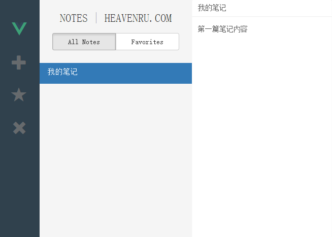
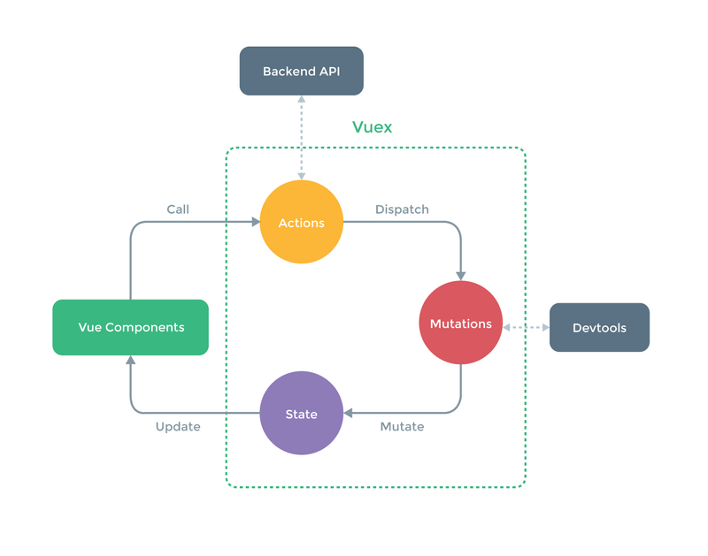
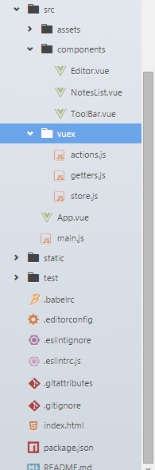
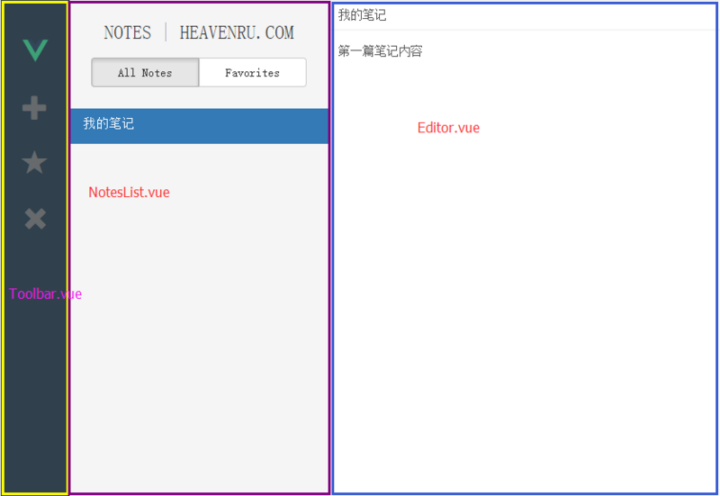

原文地址： https://coligo.io/learn-vuex-by-building-notes-app
前言
在最近学习 Vue.js 的时候，看到国外一篇讲述了如何使用 Vue.js 和 Vuex 来构建一个简单笔记的单页应用的文章。感觉收获挺多，自己在它的例子的基础上进行了一些优化和自定义功能，在这里和大家分享下学习心得。
在这篇教程中我们将通过构建一个笔记应用来学习如何在我们的 Vue 项目中使用 Vuex。我们将大概的过一遍什么是 Vuex.js，在项目中什么时候使用它，和如何构建我们的 Vue 应用。
这里放一张我们项目的预览图片：

项目源码: vuex-notes-app
项目运行: notes-app
主要知识点
Vuex 概述
在我们迫不及待的开始项目之前，我们最好先花几分钟来了解下 Vuex 的核心概念
Vuex 是一个专门为 Vue.js 应用所设计的集中式状态管理架构。它借鉴了 Flux 和 Redux 的设计思想，但简化了概念，并且采用了一种为能更好发挥 Vue.js 数据响应机制而专门设计的实现。
state 这样概念初次接触的时候可能会感觉到有点模糊，简单来说就是将 state 看成我们项目中使用的数据的集合。然后，Vuex 使得 组件本地状态（component local state）和 应用层级状态(application state) 有了一定的差异
- component local state: 该状态表示仅仅在组件内部使用的状态，有点类似通过配置选项传入 Vue 组件内部的意思。
- application level state: 应用层级状态，表示同时被多个组件共享的状态层级。
假设有这样一个场景：我们有一个父组件，同时包含两个子组件。父组件可以很容易的通过使用 props 属性来向子组件传递数据。
但是问题来了，当我们的两个子组件如何和对方互相通信的？ 或者子组件如何传递数据给他父组件的？在我们的项目很小的时候，这个两个问题都不会太难，因为我们可以通过事件派发和监听来完成父组件和子组件的通信。
然而，随着我们项目的增长：
- 保持对所有的事件追踪将变得很困难。到底哪个事件是哪个组件派发的，哪个组件该监听哪个事件？
- 项目逻辑分散在各个组件当中，很容易导致逻辑的混乱，不利于我们项目的维护。
- 父组件将变得和子组件耦合越来越严重，因为它需要明确的派发和监听子组件的某些事件。
这就是 Vuex 用来解决的问题。 Vuex 的四个核心概念分别是：
- The state tree：Vuex 使用单一状态树，用一个对象就包含了全部的应用层级状态。至此它便作为一个『唯一数据源(SSOT)』而存在。这也意味着，每个应用将仅仅包含一个 store 实例。单状态树让我们能够直接地定位任一特定的状态片段，在调试的过程中也能轻易地取得整个当前应用状态的快照。
- Getters: 用来从 store 获取 Vue 组件数据。
- Mutators: 事件处理器用来驱动状态的变化。
- Actions: 可以给组件使用的函数，以此用来驱动事件处理器 mutations。
如何你暂时还不太理解这个四个概念，不用着急，我们将在后面的项目实战中详细的解释。
下面这张图详细的解释了 Vuex 应用中数据的流向（Vuex 官方图）

简单解释下：
Vuex 规定，属于应用层级的状态只能通过 Mutation 中的方法来修改，而派发 Mutation 中的事件只能通过 action。
从左到又，从组件出发，组件中调用 action，在 action 这一层级我们可以和后台数据交互，比如获取初始化的数据源，或者中间数据的过滤等。然后在 action 中去派发 Mutation。Mutation 去触发状态的改变，状态的改变，将触发视图的更新。
注意事项
- 数据流都是单向的。
- 组件能够调用 action。
- action 用来派发 Mutation。
- 只有 mutation 可以改变状态。
- store 是响应式的，无论 state 什么时候更新，组件都将同步更新。
环境安装
这个应用将使用 webpack 来做模块打包，处理和热重启。使用 Vue 官方提供的脚手架 vue-cli。
安装vue-cli
*Node.js >= 4.x,5.x最好
初始化应用
1 2 3 4
| vue init webpack vue-notes-app cd vue-notes-app npm install // 安装依赖包 npm run dev // 启动服务
|
初始化一个项目名为vue-notes-app的应用，并选择使用 webpack 打包方式。在命令行中按照提示选择初始化配置项。其中在选择 JSLint 校验的时候，推荐选择 AirBNB 规范。
使用你最喜欢的编辑器打开我们刚刚新建的项目，项目的结构大概如下图：

- components/ 文件夹用来存放我们的 Vue 组件
- vuex/ 文件夹存放的是和 Vuex store 相关的东西（state object，actions，mutators)
- build/ 文件是 webpack 的打包编译配置文件
- config/ 文件夹存放的是一些配置项，比如我们服务器访问的端口配置等
- dist/ 该文件夹一开始是不存在，在我们的项目经过 build 之后才会产出
- App.vue 根组件，所有的子组件都将在这里被引用
- index.html 整个项目的入口文件，将会引用我们的根组件 App.vue
- main.js 入口文件的 js 逻辑，在 webpack 打包之后将被注入到 index.html 中
功能模块
- 新增笔记，新增一篇笔记，编辑区显示空的笔记内容
- 删除笔记，删除一篇笔记之后，编辑区域显示当前笔记类别的第一项
- 笔记列表切换，分为全部笔记和收藏笔记两种，在切换之后，编辑区域显示当前列表的第一条笔记
- 收藏笔记，给当前激活的笔记打上收藏的标签
项目组件划分
在这个项目中，我们将总共使用四个组件：根组件 App.vue，操作栏组件 Toolbar.vue，别表组件 NotesList.vue，笔记编辑组件 Editor.vue。

创建 Vuex Store
按照上面我们列出来的功能模块，我们在 Vuex/ 下面建立一个 store.js 文件
1 2 3 4 5 6 7 8 9 10 11 12 13 14 15 16 17 18 19 20 21 22 23 24 25 26 27 28 29 30 31 32 33 34 35 36 37 38 39 40 41 42 43 44 45 46 47 48 49 50 51 52 53 54 55 56 57 58 59 60 61 62 63 64 65 66 67 68 69
| import Vue from 'vue'; import Vuex from 'vuex'; Vue.use(Vuex); // 需要维护的状态 const state = { notes: [], activeNote: {}, show: '', }; const mutations = { // 初始化 state INIT_STORE(state, data) { state.notes = data.notes; state.show = data.show; state.activeNote = data.activeNote; }, // 新增笔记 NEW_NOTE(state) { const newNote = { id: +new Date(), title: 'New note', content: '', favorite: false, }; state.notes.push(newNote); state.activeNote = newNote; }, EDIT_NOTE(state, note) { state.activeNote = note; // 修改原始数据 for (let i = 0; i < state.notes.length; i++) { if (state.notes[i].id === note.id) { state.notes[i] = note; break; } } }, // 删除笔记 DELETE_NOTE(state) { state.notes.$remove(state.activeNote); state.activeNote = state.notes[0] || {}; }, // 切换笔记的收藏与取消收藏 TOGGLE_FAVORITE(state) { state.activeNote.favorite = !state.activeNote.favorite; }, // 切换显示数据列表类型：全部 or 收藏 SET_SHOW_ALL(state, show) { state.show = show; // 切换数据展示，需要同步更新 activeNote if (show === 'favorite') { state.activeNote = state.notes.filter(note => note.favorite)[0] || {}; } else { state.activeNote = state.notes[0] || {}; } }, // 设置当前激活的笔记 SET_ACTIVE_NOTE(state, note) { state.activeNote = note; }, }; export default new Vuex.Store({ state, mutations, });
|
创建 Vuex Actions
在 Vuex/ 下面建立一个 action.js，用来给组件使用的函数
1 2 3 4 5 6 7 8 9 10 11 12 13 14 15 16 17 18 19 20 21 22 23 24 25 26 27 28 29 30 31 32 33 34 35 36 37
| // 用于派发指定事件 function makeAction(type) { return ({ dispatch }, ...args) => dispatch(type, ...args); } const initNote = { id: +new Date(), title: '我的笔记', content: '第一篇笔记内容', favorite: false, }; // 模拟初始化数据 const initData = { show: 'all', notes: [initNote], activeNote: initNote, }; export const initStore = ({ dispatch }) => { dispatch('INIT_STORE', initData); }; // 更新当前activeNote对象 export const updateActiveNote = makeAction('SET_ACTIVE_NOTE'); // 添加一个note对象 export const newNote = makeAction('NEW_NOTE'); // 删除一个note对象 export const deleteNote = makeAction('DELETE_NOTE'); export const toggleFavorite = makeAction('TOGGLE_FAVORITE'); export const editNote = makeAction('EDIT_NOTE'); // 更新列表展示 export const updateShow = makeAction('SET_SHOW_ALL');
|
创建 Vuex Getters
在 vuex/ 下面建立一个 getter.js 文件，用来从 store 获取数据
1 2 3 4 5 6 7 8 9 10 11 12 13 14
| // 获取 noteList , 这里将会根据state.show 的状态做数据过滤 export const filteredNotes = (state) => { // eslint-disable-line if (state.show === 'all') { return state.notes || {}; } else if (state.show === 'favorite') { return state.notes.filter(note => note.favorite) || {}; } }; // 获取列表的展示状态 all or favorite export const show = (state) => state.show; // 获取当前激活 Note export const activeNote = (state) => state.activeNote;
|
以上就是我们 Vuex 的所有逻辑了，在定下了我们需要完成的功能之后，接下来就是只需要在组件中去调用 action 来实现对应的功能了。
路由配置
在这里我们将使用 vue-router 来做路由，引用 bootstrap 样式。
index.html
1 2 3 4 5 6 7 8 9 10 11 12
| <!DOCTYPE html> <html> <head> <meta charset="utf-8"> <title>vue-note</title> <link rel="stylesheet" href="https://maxcdn.bootstrapcdn.com/bootstrap/3.3.6/css/bootstrap.min.css"> </head> <body> <div id="app"></div> <!-- built files will be auto injected --> </body> </html>
|
所有的入口逻辑我们都将在 main.js 中编写
main.js
1 2 3 4 5 6 7 8 9 10 11 12 13 14 15 16 17 18 19 20 21 22 23
| import Vue from 'vue'; import App from './App'; import VueRouter from 'vue-router'; import VueResource from 'vue-resource'; // 路由模块和http模块 Vue.use(VueResource); Vue.use(VueRouter); const router = new VueRouter(); router.map({ '/index': { component: App, }, }); router.redirect({ '*': '/index', }); /* eslint-disable no-new */ router.start(App, '#app');
|
根组件 App.vue
1 2 3 4 5 6 7 8 9 10 11 12 13 14 15 16 17 18 19 20 21 22 23 24 25 26 27 28 29 30 31 32 33 34 35 36 37 38 39 40 41 42 43 44 45 46 47 48
| <template> <div id="app" class="app"> <tool-bar></tool-bar> <notes-list></notes-list> <editor></editor> </div> </template> <script> import ToolBar from './components/ToolBar'; import NotesList from './components/NotesList'; import Editor from './components/Editor'; import store from './vuex/store'; import { initStore } from './vuex/actions'; export default { components: { ToolBar, NotesList, Editor, }, store, vuex: { actions: { initStore, }, }, ready() { this.initStore(); }, }; </script> <style> html, #app { height: 100%; } body { margin: 0; padding: 0; border: 0; height: 100%; max-height: 100%; position: relative; } </style>
|
在根组件中引用了三个子组件：Toolbar.vue, NotesList.vue, Editor.vue。
注意：我们在配置里面加入了 vuex 这么一个选项，这里用来将我们 action 里面定义的方法给暴露出来，我们在根组件中只做了一件事情，那就是初始化模拟数据，因此我们在组件生命周期的 ready 阶段调用了 actions 里面的 initStore 来初始化我们的 store 里面的 state
1 2 3 4 5 6 7 8 9 10 11 12 13 14 15 16 17 18 19 20 21 22 23 24 25 26 27 28 29 30 31 32 33 34 35 36 37 38 39 40 41 42 43 44 45 46 47 48 49 50 51 52
| <template > <div id="toolbar"> <i class="glyphicon logo"><img src="../assets/logo.png" width="30" height="30" alt="" /></i> <i @click="newNote" class="glyphicon glyphicon-plus"></i> <i @click="toggleFavorite" class="glyphicon glyphicon-star" :class="{stared: activeNote.favorite}"></i> <i @click="deleteNote" class="glyphicon glyphicon-remove"></i> </div> </template> <script> import { newNote, deleteNote, toggleFavorite } from '../vuex/actions'; import { activeNote } from '../vuex/getters'; export default { vuex: { getters: { activeNote, }, actions: { newNote, deleteNote, toggleFavorite, }, }, }; </script> <style lang="scss" scoped> #toolbar { float: left; width: 80px; height: 100%; background-color: #304140; color: #767676; padding: 35px 25px 25px 25px; .stared { color: #f7ae4f; } i { font-size: 30px; margin-bottom: 35px; cursor: pointer; opacity: 0.8; transition: opacify 0.5s ease; &:hover { opacity: 1; } } } </style>
|
在这里，我们用到了 Vuex 的一个案例就是我们需要知道当前的激活的笔记是否是收藏类别的，如果是，我们需要高亮收藏按钮，那么如何知道呢？那就是通过 vuex 里面的 getters 获取当前激活的笔记对象，判断它的 favorite 是否为 true。
始终牢记一个概念，vuex 中数据是单向的，只能从 store 获取，而我们这个例子中的 activeNote 也是始终都在 store.js 中维护的，这样子就可以给其他组件公用了
1 2 3 4 5 6
| const state = { notes: [], activeNote: {}, show: '' };
|
NotesList.vue
1 2 3 4 5 6 7 8 9 10 11 12 13 14 15 16 17 18 19 20 21 22 23 24 25 26 27 28 29 30 31 32 33 34 35 36 37 38 39 40 41 42 43 44 45 46 47 48 49 50 51 52 53 54 55 56 57 58 59 60 61 62 63 64 65 66 67 68 69 70 71 72 73 74 75 76 77 78 79 80 81 82 83 84 85 86 87 88 89 90 91 92 93 94 95 96 97 98 99 100 101 102 103 104 105 106 107 108
| <template > <div id="notes-list"> <div id="list-header"> <h2>Notes | <a href="http://dingxl.com" target="_blank">dingxl.com</a></h2> <div class="btn-group btn-group-justified" role="group"> <!-- show all --> <div class="btn-group" role="group"> <button type="button" class="btn btn-default" @click="toogleShow('all')" :class="{active: show === 'all'}">All Notes </button> </div> <!-- show favorites --> <div class="btn-group" role="group"> <button type="button" class="btn btn-default" @click="toogleShow('favorite')" :class="{active: show === 'favorite'}">Favorite </button> </div> </div> </div> <!-- 渲染笔记列表 --> <div class="container"> <div class="list-group"> <a v-for="note in filteredNotes" class="list-group-item" href="#" :class="{active: activeNote === note}" @click="updateActiveNote(note)"> <h4 class="list-group-item-heading"> {{note.title.trim().substring(0,30)}} </h4> </a> </div> </div> </div> </template> <script> import { updateActiveNote, updateShow } from '../vuex/actions'; import { show, filteredNotes, activeNote } from '../vuex/getters'; export default { vuex: { getters: { show, filteredNotes, activeNote, }, actions: { updateActiveNote, updateShow, }, }, methods: { toogleShow(show) { // eslint-disable-line this.updateShow(show); }, }, }; </script> <style lang="scss" scoped> #notes-list { float: left; width: 300px; height: 100%; background-color: #f5f5f5; font-family: 'Raleway', sans-serif; font-weight: 400; } #list-header { padding: 5px 25px 25px 25px; h2 { font-weight: 300; text-transform: uppercase; text-align: center; font-size: 22px; padding-bottom: 8px; } a { text-decoration: none; color: inherit; } } #notes-list .container { height: calc(100% - 137px); max-height: calc(100% - 137px); overflow: hidden; width: 100%; padding: 0; .list-group-item { border: 0; border-radius: 0; } } .list-group-item-heading { font-weight: 300; font-size: 15px; } </style>
|
笔记列表组件，主要有三个操作
- 渲染笔记
- 切换渲染笔记
- 点击列表 title，切换 activeNote
我们通过 getters 中的 filteredNotes 方法获取笔记列表
1 2 3 4 5 6 7 8
| export const filteredNotes = (state) => { if(state.show === 'all'){ return state.notes || {}; }else if(state.show === 'favorite'){ return state.notes.filter(note => note.favorite) || {}; } };
|
可以看到，我们获取的列表是依赖于 state.show 这个状态的。而我们的切换列表操作恰好就是调用 actions 里面的方法来更新 state.show ，这样一来，实现了数据列表的动态刷新，而且我们对树的操作都是通过调用 actions 的方法来实现的。
我们再看，在切换列表的时候，我们还需要动态的更新 activeNote 。 看看我们在 store.js 中是如何做的：
1 2 3 4 5 6 7 8 9 10
| SET_SHOW_ALL(state, show){ state.show = show; if(show === 'favorite'){ state.activeNote = state.notes.filter(note => note.favorite)[0] || {}; }else{ state.activeNote = state.notes[0] || {}; } }
|
触发这些操作的是我们给两个按钮分别绑定了我们自定义的函数，通过给函数传入不同的参数，然后调用 actions 里面的方法，来实现对数据的过滤，更新。
Editor.vue
1 2 3 4 5 6 7 8 9 10 11 12 13 14 15 16 17 18 19 20 21 22 23 24 25 26 27 28 29 30 31 32 33 34 35 36 37 38 39 40 41 42 43 44 45 46 47 48 49 50 51 52 53 54 55
| <template> <div id="note-editor"> <!-- <div class="form-group"> --> <input type="text" name="title" class="title form-control" placeholder="请输入标题" @input="updateNote" v-model="currentNote.title"> <textarea v-model="currentNote.content" name="content" class="form-control" placeholder="请输入正文" @input="updateNote"></textarea> <!-- </div> --> </div> </template> <script> import { editNote } from '../vuex/actions'; import { activeNote } from '../vuex/getters'; export default { vuex: { getters: { activeNote, }, actions: { editNote, }, }, computed: { // 通过计算属性得到一个对象，更愉快的使用v-model currentNote: activeNote, }, methods: { // 由于严格模式下不能在模版中直接修改 state中的值，所以间接修改 updateNote() { this.editNote(this.currentNote); }, }, }; </script> <style lang="css"> #note-editor { height: 100%; margin-left: 380px; } #note-editor textarea { height: calc(100% - 34px); border: 0; border-radius: 0; } </style>
|
在 Editor.vue 组件中，我们需要能够实时的更新当前的 activeNote 组件和列表中对应的我们正在修改的笔记对象的内容。
由于我们前面提到过，在组件中是不允许直接修改 store.js在里面的状态值的，所以在这里的时候，我们通过一个计算属性，将 store 里面的状态值赋值给一个对象，然后在自定义的 updateNotes() 方法中，去调用 action,同时传入 currentNote 对象。
在 store.js 中，我们是这么做的，找到对应的 id 的对象，重新赋值，因为前面提到过，我们的数据是响应式的，在这里进行了改变，对应的视图也将刷新改变，这样一来就实现了实时编辑，实时渲染的功能了。
1 2 3 4 5 6 7 8 9 10 11
| EDIT_NOTE(state, note) { state.activeNote = note; for (var i = 0; i < state.notes.length; i++) { if(state.notes[i].id === note.id){ state.notes[i] = note; break; } }; },
|
Q&A
在这个项目中，我们并没有引入 vue-resource 插件，只是自己模拟了部分的数据，有兴趣的同学可以自己去试试。
由于我们的例子相对简单，没有涉及到很深入的东西，更深层次的研究需要大家花更多的时间去实践了。
最后，再说一句，在 action 里面，我们其实可以做的还有更多，比如根据 id 动态的异步获取笔记内容等等，这些有兴趣的同学可以自己去尝试，一点点的丰富这个例子。